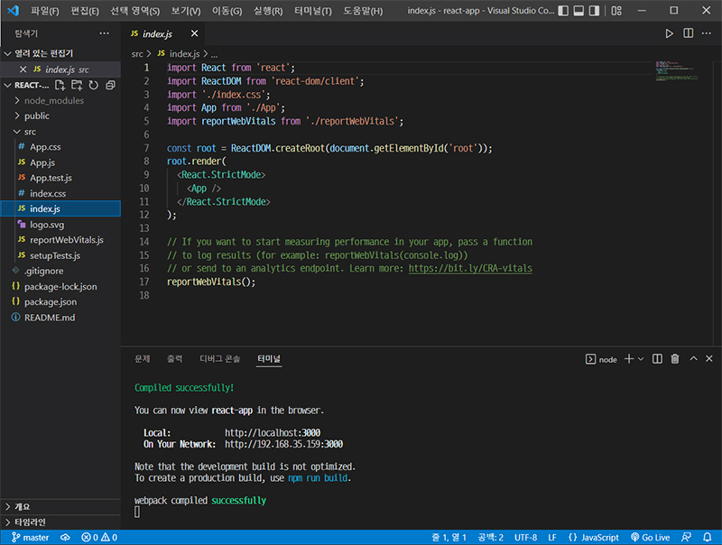
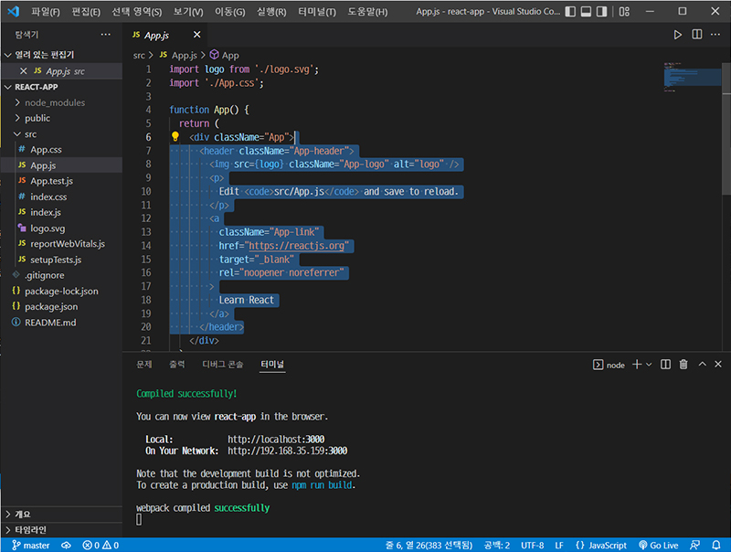
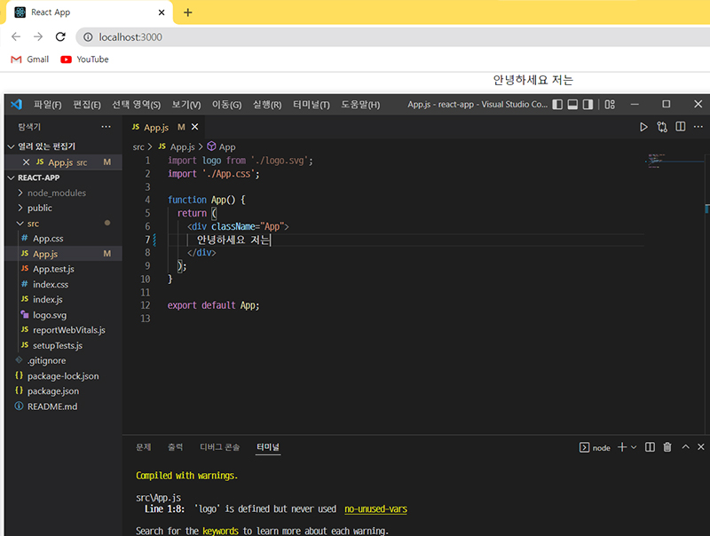
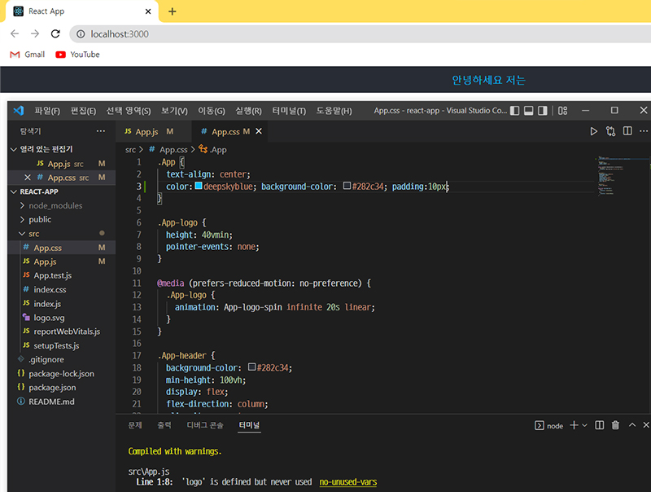
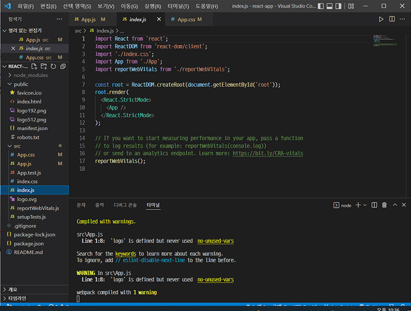
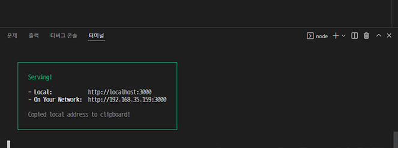

react 수정·배포
2022-04-16
react 수정하는 방법
-
src 폴더에 있는 index.js 파일은 react 앱의 입구가 되는 파일이다.
- 
- 10번 줄에 있는 <App /> 태그는 샘플 react 브라우저를 구성하고 있는 태그. 이 태그는 4번 줄에 있는 App에서 가져온 것이다.
- 4번 줄은 App이 ./App 에서 가져온 것이라는 뜻이다. ./App 에서 . 은 같은 폴더안에 존재한다는 뜻이고, App 파일명 뒤에는 .js 확장자가 생략되었다.
-
App.js 파일로 들어가면 아래와 같은 화면이 뜨는데, 선택된 부분을 지우고 수정이 가능하다.
- 
- 
- 수정된 화면.
-
화면을 꾸미기 위해서는 App.css 파일을 이용한다.
- 
- .App 태그에 작성한 color, background-color, padding이 적용되었다.
-
App.js 파일 내 7~12번 줄은 App 이라는 태그를 id 값이 root인 태그로 렌더링 하라는 뜻.
- 
- 이 root id 는 public 폴더의 index.html 파일에서 확인할 수 있다.
react를 배포하자
- react 샘플은 '개발'을 위한 애플리케이션으로, 배포하기에는 적합하지 않다. 터미널을 열고 npm run build명령어를 입력한다. 이는 배포판을 만드는 명령어로, build 라는 폴더를 생성한다.
-
빌드한 결과를 서비스하는 경우 'serve'라는 앱을 사용한다. serve는 웹 서버로, 해당 웹 서버의 옵션 중 -s(마이너스 에스) 옵션을 부여하면 사용자가 어떤 경로로 진입하든 index.html 파일을 서비스한다. npx serve -s build명령어를 터미널에 입력하면 build 폴더에 있는 index.html을 서비스하는 웹 서버를 실행하게 된다.
- 완료!
- 